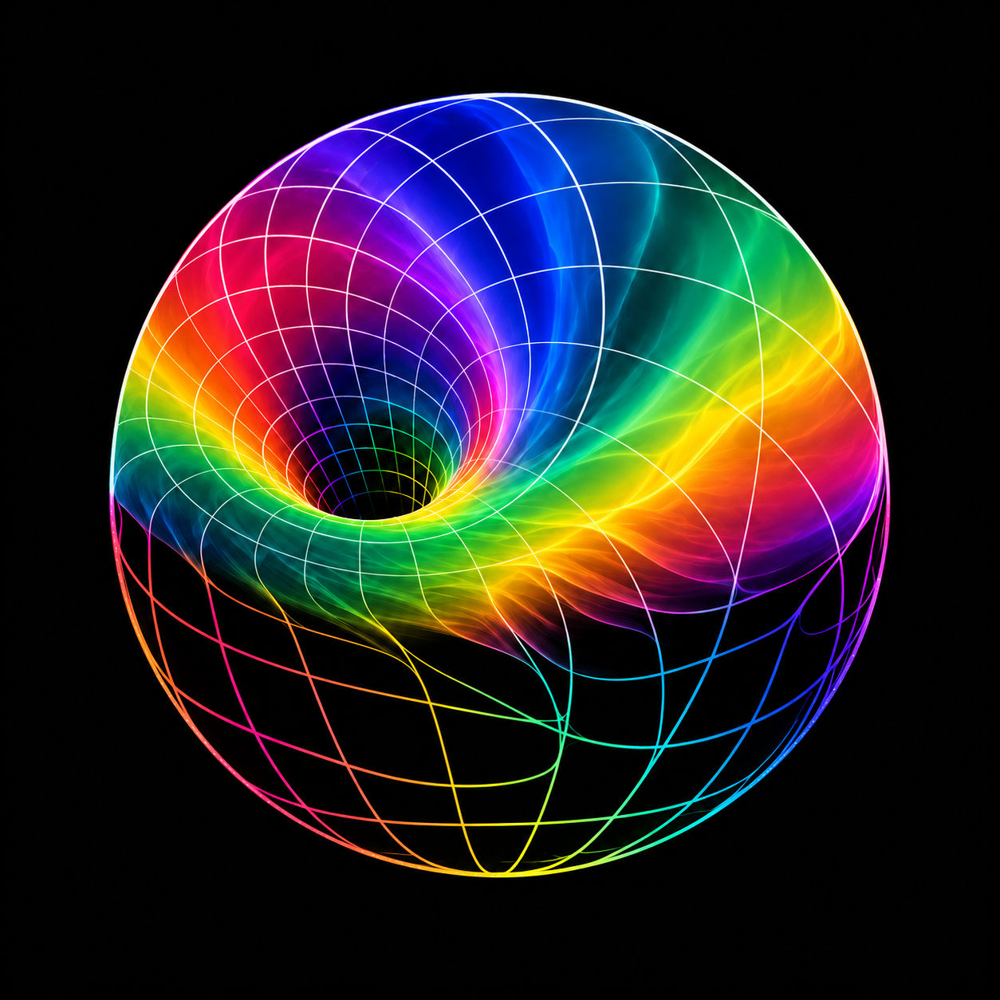

AETHER / FLUID COLOR & HAIRLINES / 09
细线与流动的光。
保留上方吸入漏斗与下方留空；以细净轮廓、玻璃液体般的色域和有机曲线，让交界自然流淌。

历史稿
边界清楚、颗粒偏干涩，下框架过于规整。

玻璃液体色域／有机细线
原图 ↙上方色彩向细线自然溶开，下方框架顺势弯曲、拉伸。
AETHER / FLUID COLOR & HAIRLINES / 09
保留上方吸入漏斗与下方留空；以细净轮廓、玻璃液体般的色域和有机曲线，让交界自然流淌。
边界清楚、颗粒偏干涩，下框架过于规整。

上方色彩向细线自然溶开，下方框架顺势弯曲、拉伸。